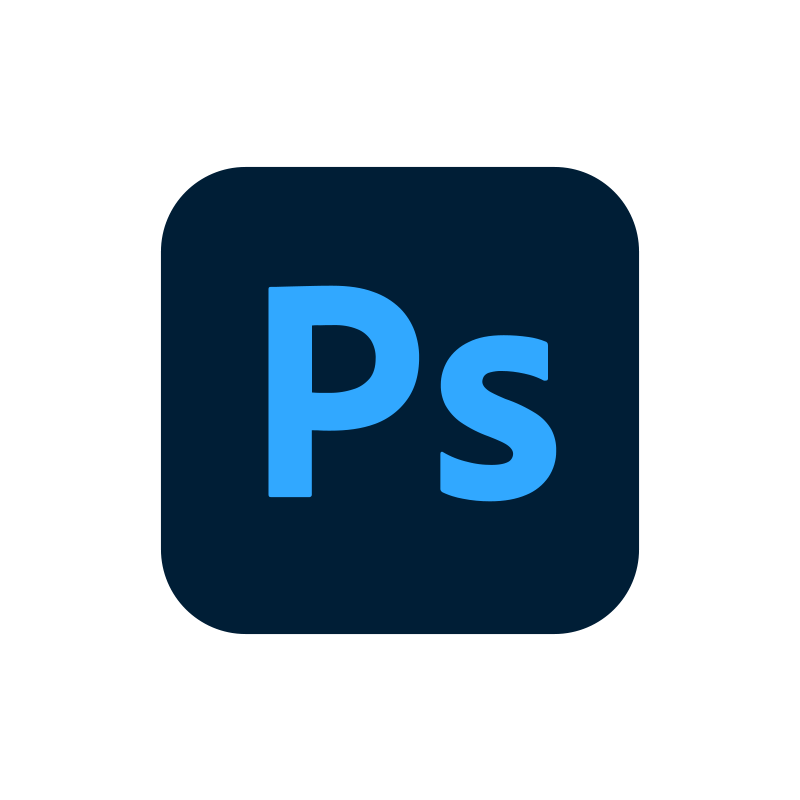

Tecnologías que utilizo

Lenguaje de marcado utilizado para estructurar el contenido de páginas web.

Lenguaje de estilos que permite dar formato, diseño y presentación visual a los sitios web.

Lenguaje de programación que permite añadir interactividad, animaciones y funcionalidades a las páginas web.
Sistema de gestión de bases de datos relacional, ideal para almacenar y consultar información en proyectos web.
Lenguaje de programación del lado del servidor utilizado para desarrollar funcionalidades dinámicas en sitios web.
Software de diseño gráfico vectorial utilizado para crear logotipos, íconos e ilustraciones profesionales.

Herramienta de edición de imágenes utilizada para fotomontajes, retoques digitales y creación de contenido visual.
Servidor web que permite alojar y ejecutar aplicaciones web en entornos de desarrollo y producción.